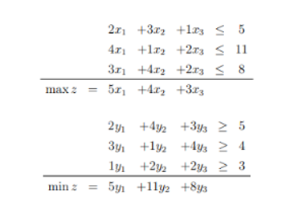

| Primál | Duál |
|----------|-----------|
| max | min |
| | |
| | |
A primál feladat
maximalizálunk
a célfüggvény együtthatóinak a vektora
az együtthatók mátrixa
a konstansok vektora
A duál feladat
minimalizálunk
a célfüggvény együtthatóinak a vektora
az együtthatók mátrixa
a konstansok vektora
<=-ket >=-re cseréljük
A duál feladat duálisa az eredeti primál feladat
Ahhoz, hogy duál feladatot megkapjuk a primálból a következő lépéseket kell megtenni:
Transzponáljuk az A mátrixot
cseréljük fel és vektorok szerepét
cseréljük az egyenlőtlenségeket -re
Max helyett Min feladat
Gazdaásgi értelmezése: Tegyük fel, hogy az LP feladatunk korlátozott erőforrások mellet maximális nyereséget célzó gyártási folyamat modellje.
A duál feladat megoldásában az a primál feladat erőforrásához tartozó piaci ár, amit marginális ár / árnyék ár-nak nevezünk.
Ez az errőforrás értéke az LP megoldójának a szemszögéből
Az erőforrás mennyiségénk az egységnyi növelésével éppen gal nő a nyereség.
Viszont ha túl sok van egy erőforrásból, az nem érhet sokat.
Továbbá -nál többet már nem érdemes fizetni az erőforrásért, míg kevesebbet igen.
Ha lehetséges megoldása a primál feladatnak és lehetséges megoldása a duál feladatnak, akkor
Vagyis a duális feladat bármely lehetséges megoldása felső korlátot ad a primál bármely lehetséges megoldására.
Ha optimális megoldása a primál feladatnak, akkor a duál feladatnak is van optimális megoldása , és a célfüggvényük megegyezik, azaz
Ha valamelyik i. feltétel egyenlet nem éles, azaz nem pontosan egyenlő a két oldal, akkor a kapcsolódó duál változó biztosan 0. Ha egy primál változó pozitív, akkor a kapcsolódó duális feltétel biztosan éles.
A korlátosság és a megoldhatóság nem függetlenek egymástól
Ha a primál nem korlátos, akkor a duálnak nincs lehetséges megoldása és fordítva.
Lehet, hogy egyiknek sincs lehetséges megoldása.
Ha mindkettőnek van, akkor mindkettő korlátos
A primál és a duál feladat egyidejű optimalitása ellenőrizhető.
Ha a primál-duál feladatpár
| max | min |
|----------|-----------|
| | |
| | |
Akkor azt mondjuk, hogy és komplementárisak, ha és
Vagyis:
Ha , akkor az -et az -edik egyenletbe helyettesítve egyenlőséget kapunk
Ha , akkor -t a duális feladat -edik egyenletébe helyettesítve az egyenlőség teljesül.
Tétel
Tegyük fel, hogy a primál feladat optimális megoldása.
Ha a duál optimális megoldása, akkor és komplementáris.
Ha lehetséges megoldása a duálisnak és komplementáris -szel, akkor optimális megoldása a duálnak
Létezik olyan lehetséges megoldása a duálnak, hogy és komplementáris
Ergo, ha van ilyen és vektor, amik a fenti “Vagyis”-ra teljesülnek, akkor az fixen optimális megoldása a primál-duál feladatpárnak
Tiszta egészértékű feladat (Integer Programming)
Vegyes egésztértékű programozási feladat (Mixed Integer Programming)
0-1 IP
LP lazítás
Egészértékű programozási feladat LP lazítása az az LP, amelyet úgy kapunk, hogy a változókra tett minden egészértékűségi vagy 0-1 megkötést eltörlünk.
Bármelyik IP lehetséges megoldáshalmaza része az LP lazítás lehetséges megoldástartományának
Maximalizálásnál az LP lazítás optimum értéke nagyobbegyenlő, mint az IP optimumértéke
Ha az LP lazítás lehetésges megoldáshalmazának minden csúcspontja egész, akkor van egész optimális megoldása, ami az IP megoldása is egyben
Az LP lazítás optimális megoldása bármilyen messze lehet az IP megoldásától.
Megoldjuk az LP lazítást, ha a megoldás egészértékű, akkor done
Ha van lezáratlan részfeladatunk, akkor azt egy xi nem egész változó szerint két részfeladatra bontjuk.
Ha értéke , akkor és feltételeket vesszük hozzá egy egy részfeladatunkhoz
a részproblémákat egy fába rendezzük
a gyökér az első részfeladat, az LP lazítás
a leszármazottai az ágaztatott részproblémák
a hozzávett feltételeket az éleken adjuk meg
a csúcsokban jegyezzük az LP-k optimális megoldásait
Lehet, hogy olyan részproblémát kapunk, aminek nincs lehetséges megoldása, ekkor ezt a levelet elhagyjuk
Találhatunk megoldásjelölteket is, ezek alsó korlátok az eredeti IP optimális értékére.
Ha találunk korábbi megoldásjelöltnél jobb megoldást, akkor a rosszabbat elvetjük.
Egy csúcs felderített/lezárt, ha
nincs lehetséges megoldása
megoldása egészértékű
felderítettünk már olyan egész megoldást, ami jobb a részfeladat megoldásánál
Egy részfeladatot kizárunk, ha
nincs lehetséges megoldása
felderítettunk már olyan egész megoldást, ami jobb a részfeladat megoldásánál
Egy olyan IP-t, amiben csak egy feltétel van, hátizsák feladatnak nevezünk.
Van egy hátizsákunk egy fix kapacitással, és tárgyaink, értékekkel és súlyokkal megadva.
Maximalizálni akarjuk a táskába rakott tárgyak értékét, úgy hogy a benne lévő tárgyak nem haladhatják meg a hátizsák kapacitását persze.
0-1 IP feladat, egy tárgyat viszünk vagy nem
Az LP lazítás könnyen számítható, a relatív hasznosság szerint tesszük a tárgyakat a táskába, vagyis az érték/súly hányadosuk szerint.
Branch and bound módszerrel ez is megoldható
Legrosszabb esetben 2^n részfeladatot kell megoldani, NP nehéz a feladat.
Egészértékűnél még rosszabb, , ahol M a lehetséges egészek száma egy változóra